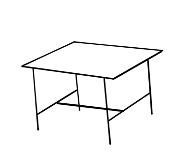
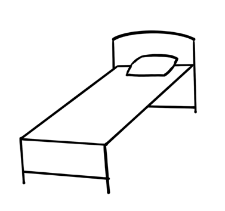

3.
Draw light lines of the object you want to draw.
This will help you erase and correct easily;
4.
Bold your drawing with pencils to make it clear; and
5.
Review your drawing to improve the lines by erasing unnecessary marks to enhance the overall appearance.
Using lines to draw stick figures
Stick figures are images of people or things drawn by using only lines.
The lines include horizontal, vertical, and curved lines.
This is the first stage for art beginners.
Figure 1 shows the stick figure drawings drawn by a pencil.



Figure 1: Stick figure drawings
Drawing tools
The following are some of the tools used in drawing stick figures:
(a)
Pencil;
(b)
Sharpener;
(c)
Drawing paper;
(d)
Eraser;